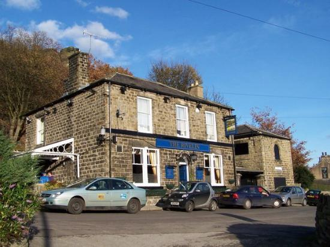
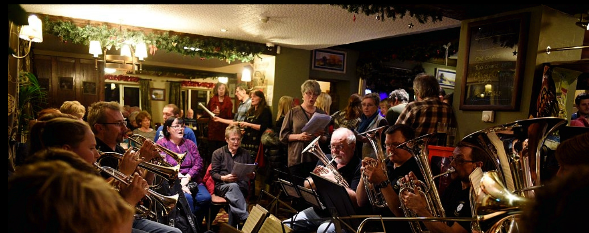
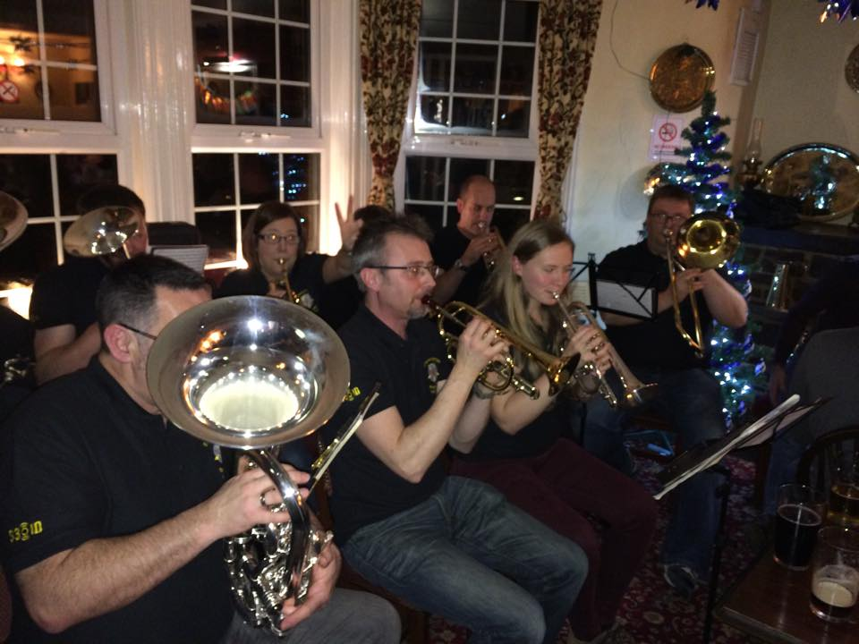
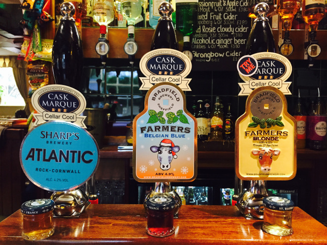

We Wish you a merry Christmas, Sheffield style!
Joe Knight delves into longstanding traditions of Christmas in the Steel City
Published on 20 December 2017 by Joseph Knight
Features
On a chilly evening in December, the bar of the Rivelin Hotel heaves with both regulars and newcomers. Lively orange flames flicker against the filthy glass of a log burner, as pub-goers belt out carols. But these aren’t any old carols. Many of them are only ever sung in this part of the world.

I’m a member of Stannington Brass Band (one of ten brass bands in the city), and in the corner we are playing ‘Jacob’s Well’ a carol unique to Sheffield. I play the solo cornet part, and am a relative newcomer to this unusual tradition of playing and singing local carols to celebrate Christmas. Around me sits a motley group of teenagers, pensioners and middle-aged parents, all playing the musical accompaniment on battered brass instruments, euphoniums, baritones and trombones among them.
Historic traditions
Sheffield is a city in which historic carolling traditions still hold strong. Here you can hear old favourites known up and down the country, but as well as ‘Hark! The Herald Angels Sing’ and ‘O Little Town of Bethlehem’ locals sing carols which have been passed down from generation to generation for more than 200 years. These hark back to a time when hundreds of villages, towns and regions had their own special traditions, and very few areas of the country continue to uphold them as strongly as they do here in Sheffield.
Some villages, like Oughtibridge, Malin Bridge and even Stannington itself have their own special carols; some villages share carols -– the carolling tradition refuses to die out, and has gained a following all over the city. Throughout December groups sing and play in pubs until Christmas Day itself, when they head out to the streets of the tiny villages they hail from to entertain the villagers. Often they’re met with warm cups of tea, glasses of Sherry, and always mince pies.
“Locals sing carols which have been passed down from generation to generation for more than 200 years.”
"Singing in the Rivelin"
East of the city centre, back in the Rivelin Hotel (which is in fact less of a hotel, and more a traditional boozer), the singers and band warm up with well-known local carols such as ‘Diadem’ and ‘Hail Smiling Morn’, before they offer their rendition of the lesser-known ‘Back Lane’ and ‘Pentonville’. These names meant nothing to me three years ago when I first came to Sheffield as a first-year student at the university, but now they evoke such fond memories for me that they’ve become a regular part of my Christmas tradition – and I hope they will remain so.

To a newcomer the melodies are recognisably ‘carolly’ but the lyrics are different from those of traditional carols sung around the rest of the UK. The locals love them. To them, the carols help to define Sheffield’s unique character, and to distinguish it from other big northern cities, as well as offering a genuine sense of community and celebration in the run-up to Christmas.

There’s also a tradition of solos: some carols must be sung by only one person; others might have certain verses which tradition dictates should be unaccompanied. In ‘Diadem’, for example, the brass band and singers in the know sing a final chorus of, ‘And crown him Lord of all!’ four times (no more, no less) after the carol has finished. When I first played this one with Stannington Brass Band, I was more than a little lost by the time we’d reached the end. Now though, I put down my cornet and sing just as loudly as Becky Ball, a horn player who’s been part of the band for 18 years, ever since she was seven.
“Christmas wouldn’t be the same without ’em,” she tries to tell me over the shouts of the raucous audience queuing at the bar during a break in playing. “When I joined Stannington, I only lived two minutes away and people taught me the carols; now it’s my job to teach people like you.” Becky is now a secondary DT teacher at Rawmarsh Community School in Rotherham. “They don’t have anything like this over there,” she says proudly.
Another popular tradition is the relentless repetition of ‘While Shepherds Watched Their Flocks by Night’, sung throughout the evening more times, to more different melodies, than most outsiders would care to contemplate. This is because it was the only Christian hymn which was permitted by the Anglican Church before 1700, as Dr Ian Russel, an academic authority on the subject, told me. You can tell immediately who in the audience knows what is going on, and who is uninitiated.
Seasonal accompaniment
It’s not only special carols which come out at Christmas in this part of the north. There’s a unique addition to the brews on sale in Sheffield’s pubs in the form of a refreshing festive ale called Belgian Blue. This beer is made in the village of Bradfield, a couple of miles from the city centre, and sold only at Christmas.

For many locals, Christmas would not be the same without it. In any pub hosting local carols, you can be certain that most of the singers, all the band members – and maybe even the everyday pub-goers – will be clutching a glass of the purple 4.9% bitter, with a well-lubricated smile on their lips, singing all the louder as each pint is gulped down.
Here in the Rivelin Hotel, a hand pump adorned with flashing lights announces that the special Christmas ale is on sale. The extra staff brought in to help sate the carol singers’ thirst gather round it waiting to pull pint after pint after pint. This beer is not the most flavoursome, the hoppiest, the strongest or even the most colourful of beers, but it is the only drink that will do for traditionalists during the carolling season.
These local carols sung year after year make Christmas in Sheffield unique. They make it special, harking back as they do to a time when information couldn’t be accessed at the touch of a button or a voice command, but was passed down through the generations, person to person in time-honoured fashion. The traditions that accompany the carols, from the specially-produced beer to the more formal vocalisations, have become an essential part of Christmas for many in the City of Sanctuary.